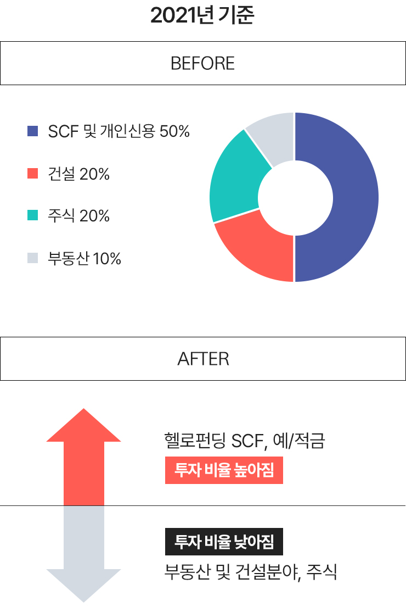
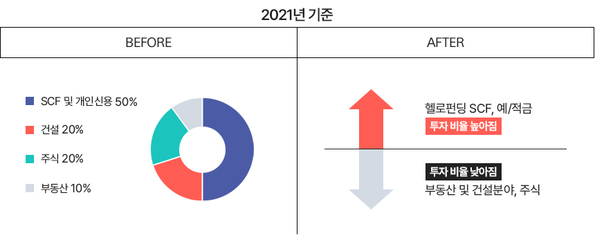
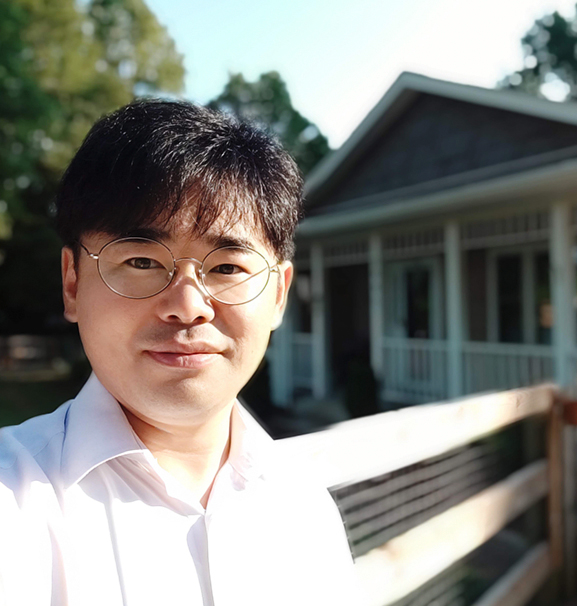
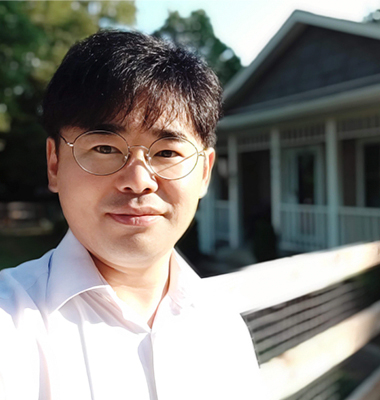

안녕하세요? 저는 4인 가장에 외벌이를 하고 있는 현재 초등학교 20년차 교사 김성훈입니다.
온투법 이전부터 타 회사의 고이율 개인신용에만 투자하고 있었어요.
그러나 해당업체가 온투법 대처를 하지 못해 적지 않은 투자금 손실을 겪게 되고서는 안정적이고 연체 없는 업체를 찾다가 헬로펀딩을 만나게 되었습니다.
경기 상황에 맞는 투자 방식을 찾는다
“나의 현금 유용성에 초점으로 돈이 묵히는 일이 없게 하죠!”
경기 상황에 맞는 투자방식을 찾고 대중적인 방식보다는 나의 현금 유용성에 맞추어서 투자하는 것에 초점을 맞춥니다.
간단히 말해서 어떤 방식으로든 이율 낮은 월급 통장에서 돈이 묵히는 일이 없도록 하는 게 재테크의 핵심이죠.
외벌이로 빡빡한 수입이지만 생활비를 제외하고 매월 100여만원의 여유금액을 부동산, SCF, 개인신용, 주식 등에 분산투자하고 있으며 부동산은 6개월에서 12개월짜리 부동산담보 및 건설자금 쪽으로, SCF는 한 달 이내의 짧은 투자, 개인신용은 일주일 이내 마지막으로 주식은 안정적인 기업의 장기 투자를 선호합니다.
김성훈님의 투자 포트폴리오

이제는 부동산 및 건설 분야를 중단기 고이율의 예·적금과 SCF의 비율 높일 것!

2021년 이전까지는 SCF 및 개인신용 50%, 건설 20%, 부동산 10%, 주식 20% 정도의 비중을 두고 투자했으며 최근 우크라이나 사태 등 세계정세의 불안정으로 인한 원자재값 상승 등으로 부동산 및 건설 분야에 투자했던 비용을 중단기 고이율의 예·적금으로 전환하고 있습니다.
또한 인플레이션과 고금리 현상이 지속되는 동안은 주식의 경우 아직은 어디가 끝인지 알 수 없기에 약간의 숨 고르기를 하는 상황이고요.
가능한 예적금 위주의 현금자산 운용에 초점을 맞출 예정이지만, 헬로펀딩의 SCF는 못 끊을 것 같네요. 가능한 예적금을 제외한 금액은 단기 SCF 위주로 지속 운용할 예정입니다.
헬로펀딩은 항상 정확한 담보와 안정적인 자금 회수로 신뢰!
최고의 상품은 단연 SCF 초단기 투자 상품
헬로펀딩의 경우 정확한 담보와 안정적인 자금 회수에 신뢰를 갖게 되었습니다. 최근 부동산 투자가 어려움을 겪고 있음에도 불구하고 여전히 안정적으로 자금을 회수하는 모습을 보여줘 매우 신뢰하며 지속적인 투자를 하고 있습니다.
특히 개인적으로는 단기 SCF 상품을 선호합니다.
신용평점 및 재무현황, 연체율을 꼼꼼히 살펴 투자하는데 매번 투자 시간 1~2분 만에 투자 완료가 되는 것만 봐도 얼마나 인기가
많고 사람들이 관심을 가지는지 알 수 있지요.
그러나 지속적인 상품 업데이트를 통해 투자금을 계속 연결시켜 투자할 수 있어서 좋습니다.
2~4일의 단기 상품이지만 고이율로 인해 간식값을 꾸준히 벌 수 있어 행복합니다. ^^
SCF 상품의 경우, 거의 일정한 시간대에 고정적으로 상품이 올라오기 때문에 매번 사이트를 들여다보지 않아도 된다는 점과
해당 시간에 투자를 놓쳐도 알림 서비스를 통해 추가적인 투자 기회를 가질 수 있어 좋습니다.
동시간대에 많은 사람들이 몰릴 때에도 안정적으로 서버가 운용되는 것 또한 장점이라 봅니다.


나에게 헬로펀딩이란?
나에게 헬로펀딩은 간식창고이다.
사나흘 간격으로 지속적으로 들어오는 1만원 정도의
이자는 매일의 소소한 행복입니다.
일주일에 한 번씩은 치킨 뜯는 행복을 가져다주는
헬로펀딩은 저에게 최고의 '간식창고'입니다^^